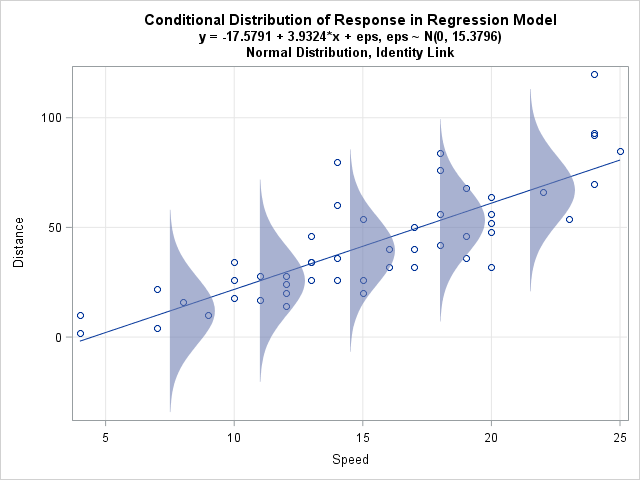
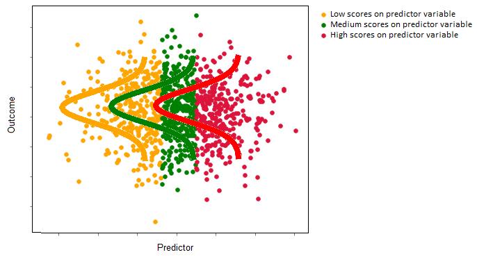

What are Generalized Linear Models?#
Generalized linear models are extensions of linear regression, and the linear regression model itself is a specific type of generalized linear model. Generalized linear models relax some of the assumptions of linear regression and as a result, they can be applied to a wider variety of datasets. This page will serve as a refresher to linear regression, and will explain how generalized linear models work, by reference to linear regression.
Linear regression involves modelling the linear relationship between a set of scores on a quantitative outcome variable (denoted \(y\)) and scores on a set of predictor variables (denoted with \(x_1, x_2 ... x_k\)). The predictor variables can be of any type (quantitative-continuous, quantitative-discrete, nominal-categorical, ordinal-categorical), but the outcome variable (generally) must be numerical. Linear regression uses a linear prediction equation of the form::
\(\large \hat{y}_i = b_0 + b_1x_{1i} + ... + b_kx_{ki} \)
…where there are \(k\) predictor variables, and \(n\) observations, and where:
\(\hat{y_i} \) : is the predicted value of the outcome variable for a given set of predictor scores, for the \(i\)th observation
\(b_0\) : is the intercept term, this is, the predicted value of the outcome variable for an observation where all predictor scores equal 0
\(b_1\) : is the slope of the 1st predictor variable
\(x_{1i}\) : is the score on the the first predictor variable, for the \(i\)th observation
\(b_k\) : is the slope of the \(k\)th predictor variable
\(x_{ki}\) : is the score on the \(k\)th predictor variable, for the \(i\)th observation
Linear regression assumes a normal distribution of the residuals - that is, that the distribution of the differences between the model predictions and the actual datapoints \((y_i - \hat{y_i})\) is normal. Generalized linear models relax this (and other) assumptions, and so extend the machinery of linear regression to allow us to use a linear prediction equation to predict an outcome variable with a distributional form that is non-normal.
The ‘Conditional Distribution’ view of regression models#
Linear regression is often introduced via the sum of squares perspective, whereby the parameter estimates (the intercept and slopes) are obtained by find the values of \(b_0, b_1 ... b_k\) which give the minimum value of:
\( \large \sum\limits_{i = 1}^{n} (y_i - \hat{y}_i)\)
or equivalently:
\( \large \sum\limits_{i = 1}^{n} (y_i - (b_0 + b_1x_{1i} ... + b_kx_{ki})) \)
In the case of linear regression, minimizing the sum of the squared error provides the best linear unbiased estimates of the population parameters, when the model assumptions are met. However, minimizing the sum of squared error does not provide the best parameter estimates for other generalized linear models. A different perspective is therefore required to understand the parameter estimation employed by generalized linear models. I will refer to this other perspective as the ‘conditional distribution’ perspective. This is easiest to visualize for a linear model containing only one predictor. In the single-predictor case, the conditional distribution perspective of linear regression is that it involves fitting a normal distribution for each level of the predictor, and that the linear regression line runs through the mean of each normal distribution, as shown in the image below:

(Image from: https://blogs.sas.com/content/iml/2015/09/10/plot-distrib-reg-model.html)
If the predictor is useful - e.g. if it gives a lot of predictive information about the outcome variable - then the conditional means of these normal distributions will change a lot as the value of the predictor changes. The image below illustrates a strong predictor-outcome relationship in a single-predictor linear regression. The conditional mean of the red distribution (high value of the predictor) is much larger than the mean of the orange distribution (low values of the predictor). (The linear regression line would run through the means of these normal distributions):
If the predictor is not very useful, then the conditional means of the normal distributions will not change a lot as the value of the predictor changes (e.g. the predictor gives very little information about the value of the outcome variable). The image below illustrates a weak/null predictor-outcome relationship in a single-predictor linear regression. The conditional mean of the red distribution (high value of the predictor) is the same as the mean of the orange distribution (low values of the predictor). Again, the linear regression line would run through the means of each of these normal distributions, but it would be flat, as the predictor does not give much information about the outcome:

For linear regression, the conditional distribution approach and the sum of squares approach produce equivalent parameter estimates. As mentioned above, generalized linear models - other than linear regression - let us use a linear prediction equation to predict outcome variables that are not normally distributed. They do this by fitting other distributional forms (e.g. non-normal distributions) to the outcome variable. In later pages, we’ll go into detail about the how these distributions are fit to the data, from the conditional distribution perspective (which is technically called the maximum likelihood perspective).
Some other ways of writing the linear regression model are useful here, to illustrate the conditional distribution approach. The linear regression model predicts the conditional mean of each normal distribution, as a function of the predictor variables, we can write the model as:
\(\large \hat{\mu_i} = b_0 + b_1x_{1i} + ... + b_kx_{ki} \)
Generalized linear models - of which the linear regression model is a special case - fit a linear regression equation to some function of the conditional mean. This function is called the link function because it links the linear prediction equation with the outcome variable. In the case of linear regression, the link function is just \(1 *\hat{\mu_i} \), and so is referred to as the identity link function. Thus, the general form of generalized linear models is:
\(\large f(\hat{\mu_i}) = b_0 + b_1x_{1i} + ... + b_kx_{ki} \)
For linear regression, the predictions that the model can produce range across the entire real line \((-∞, ∞)\). This can produce nonsensical predictions for certain types of outcome variable. For instance, negative valued predictions do not make sense for binary outcomes that fall into one of two categories, and are dummy-coded as 0 or 1. Nor do negative predictions make sense for count outcomes, which take only whole-number positive values.
The link function in generalized linear models maps the linear prediction equation to a function of the conditional mean which theoretically ranges from \((-∞, ∞)\). For instance, when dealing with binary outcome variables, we can use the logit link function \(ln(\frac{μ} {1 – μ})\). This maps the linear prediction equation to the log of the odds ratio, the scale of which ranges from \((-∞, ∞)\). The predictions of the logistic regression model form a straight line on the scale of the log odds ratio, but form a different curve on the scale of the original data, where they predict probabilities, bounded between 0 and 1.
The table below shows some of the generalized linear models that are covered by this textbook:
Model type |
Response distribution |
Range of predicted values |
Link name |
Link function |
|---|---|---|---|---|
Linear Regression |
Normal Distribution |
real: (-∞, ∞) |
Identity |
1 * \(μ\) |
Logistic Regression |
Bernoulli |
Integers: {0, 1} |
Logit |
\(ln(\frac{μ} {1 – μ})\) |
Poisson Regression |
Poisson Distribution |
integers: 0, 1, 2, … |
Log |
\(ln(μ) \) |
The structure of this book#
This book will use simulated data, which (hopefully) cleanly and clearly illustrates the principles of fitting generalized linear models. Each page will focus on a different type of generalized linear model, and will involve data from a different hypothetical island. Each model will be explained first in the one-predictor case, using a continuous predictor, then in using several predictors, one of which will be categorical.
Let’s visit the islands, the links are in the table of contents, and at the bottom of this page…
By pxr687